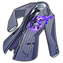

추천 광추
피의 불꽃이여, 앞길을 태워라
HP와 HP 소모 연계 피해·방어력 무시
효과 자세히
HP +18%, 받는 치유 +20%. 스킬·필살기에서 최대 HP 6% 소모 → 피해 +30%, 소모량 500 초과면 추가 +30%.
이 몸이 검이니
동료 HP 감소 → 중첩 피해·방어력 무시
효과 자세히
치명타 피해 +20%. 동료 피격·HP 소모당 다음 공격 피해 +14%(최대 3스택). 3스택에서 방어력 12% 무시.
과거의 핏자국
치명타 확률과 스킬·필살기 피해
효과 자세히
치명타 확률이 20% 증가. 가하는 전투 스킬과 필살기 피해가 40% 증가
인사록•음률 사냥
최대 HP와 HP 손실 후 치명타 피해
효과 자세히
HP 최대치가 24% 증가하고, 자신의 HP를 잃거나 회복하면 치명타 피해가 36% 증가, 지속 2턴, 해당 효과는 턴마다 1회만 발동
비밀 맹세
스킬·필살기 피해 보강
효과 자세히
가하는 피해가 40% 증가하며, 동시에 현재 HP 백분율이 장착한 캐릭터 자신의 HP 백분율 이상인 적에게 가하는 피해가 추가로 40% 증가
추천 유물
지식의 바다에 빠진 학자 4 · 고요한 습골지 2
- 머리
 주옵션HP부옵션속도 · 치명타 확률 · HP% · 치명타 피해
주옵션HP부옵션속도 · 치명타 확률 · HP% · 치명타 피해 - 손
 주옵션공격력부옵션속도 · 치명타 확률 · HP% · 치명타 피해
주옵션공격력부옵션속도 · 치명타 확률 · HP% · 치명타 피해 - 몸통

주옵션HP%부옵션속도 · 치명타 확률 · 치명타 피해 - 다리
 주옵션속도 / HP%부옵션속도 (주옵션 제외) · 치명타 확률 · HP% (주옵션 제외) · 치명타 피해
주옵션속도 / HP%부옵션속도 (주옵션 제외) · 치명타 확률 · HP% (주옵션 제외) · 치명타 피해 - 구체
 주옵션HP%부옵션속도 · 치명타 확률 · 치명타 피해
주옵션HP%부옵션속도 · 치명타 확률 · 치명타 피해 - 매듭
 주옵션HP%부옵션속도 · 치명타 확률 · 치명타 피해
주옵션HP%부옵션속도 · 치명타 확률 · 치명타 피해
이 조합을 추천하는 이유
4.7 학자·습골지 세팅에서 HP 구체를 착용합니다.
지식의 바다에 빠진 학자 4 · 고요한 습골지 2
- 머리
주옵션HP부옵션속도 · 치명타 확률 · HP% · 치명타 피해
- 손
주옵션공격력부옵션속도 · 치명타 확률 · HP% · 치명타 피해
- 몸통 주옵션HP%부옵션속도 · 치명타 확률 · 치명타 피해
- 다리
주옵션속도부옵션치명타 확률 · HP% · 치명타 피해
- 구체
주옵션HP%부옵션속도 · 치명타 확률 · 치명타 피해
- 매듭
주옵션HP%부옵션속도 · 치명타 확률 · 치명타 피해
이 조합을 추천하는 이유
4.7 학자·습골지 세팅에서 HP 구체를 착용합니다.
지식의 바다에 빠진 학자 4 · 고요한 습골지 2
- 머리
주옵션HP부옵션치명타 확률 · HP% · 속도 · 치명타 피해
- 손
주옵션공격력부옵션치명타 확률 · HP% · 속도 · 치명타 피해
- 몸통 주옵션HP%부옵션치명타 확률 · 속도 · 치명타 피해
- 다리
주옵션속도 / HP%부옵션치명타 확률 · HP% (주옵션 제외) · 속도 (주옵션 제외) · 치명타 피해
- 구체
주옵션얼음 피해 증가부옵션치명타 확률 · HP% · 속도 · 치명타 피해
- 매듭
주옵션HP%부옵션치명타 확률 · 속도 · 치명타 피해
이 조합을 추천하는 이유
학자·습골지를 사용하고 구체 주옵을 얼음 피해 증가로 고정하는 4.7 추천안입니다.
이 정도면 잘 키웠다
선택한 세팅 기준 · —는 확인된 수치 없음
학자·습골지에서 HP를 우선하는 기본 세팅입니다.
| 스탯 | 추천 스탯 | 준종결 | 종결 |
|---|---|---|---|
| HP | 8000 | — | 8000 |
| 속도 | — | — | 134 |
| 치명타 확률 | 50% | — | 50% |
| 치명타 피해 | 150% | — | 200% |
세팅 기준·출처
4.7 시트의 HP 스케일을 적용합니다. 확인한 자료에 독립적인 준종결 수치가 없습니다.
- 선데이 편성
선데이의 치명타 확률 지원과 직후 행동을 전제로 조율합니다.
| 스탯 | 추천 스탯 | 준종결 | 종결 |
|---|---|---|---|
| HP | 8000 | — | — |
| 속도 | 133.4+[1]선데이 편성 시 그보다 약간 빠르게. | — | — |
| 치명타 확률 | 30%[2]4.7 시트의 선데이 치명타 확률 지원 조건입니다. | — | — |
| 치명타 피해 | 150% | — | — |
성혼과 추천 돌파
성혼 1은 강화 공격의 단일 대상 피해를 올립니다. 최신 HP 세팅과 치유 파티를 우선 갖추세요.
1강화 스킬·필살기 → 치명타 피해 +36% 및 HP 80% 추가 피해추천
필살기 또는 강화된 전투 스킬 발동 시 경류의 치명타 피해가 36% 증가, 지속 1턴. 또한 추가로 주목표에게 경류 HP 최대치의 80%만큼 얼음 속성 피해를 1회 가한다
2필살기 후 다음 강화 스킬 피해 +80%
필살기 발동 후 다음 강화된 전투 스킬의 피해가 80% 증가
3필살기 +2 · 특성 +2
필살기 +2 · 특성 +2
4전백 중 달빛당 치명타 피해 +20%
전백(轉魄) 상태에서 달빛 스택마다 추가로 치명타 피해가 20% 증가
5전투 스킬 +2 · 일반 공격 +1
전투 스킬 +2 · 일반 공격 +1
6전백 진입 삭망 상한 +1·획득 +2, 얼음 저항 관통 +30%
경류가 전백(轉魄) 상태 진입 시 삭망의 최대 스택이 1스택 증가하고 삭망을 2스택 추가로 획득. 전백 상태일 때 얼음 속성 저항 관통이 30% 증가
추천 파티


기본 운영과 행적
기본 운영
일반 스킬로 삭망을 모아 전백에 들어가고, 전백 중 필살기로 추가 삭망을 얻으세요. 정련된 새 빛 적용 후 피해는 경류의 최대 HP에 비례합니다. 파티 HP가 여러 번 줄어들수록 달빛이 쌓입니다.
행적 우선순위
전투 스킬 = 특성 > 필살기 > 일반 공격. 전백의 치명타와 달빛이 열리는 행적을 해금하세요.
아하 속도 계산기 →